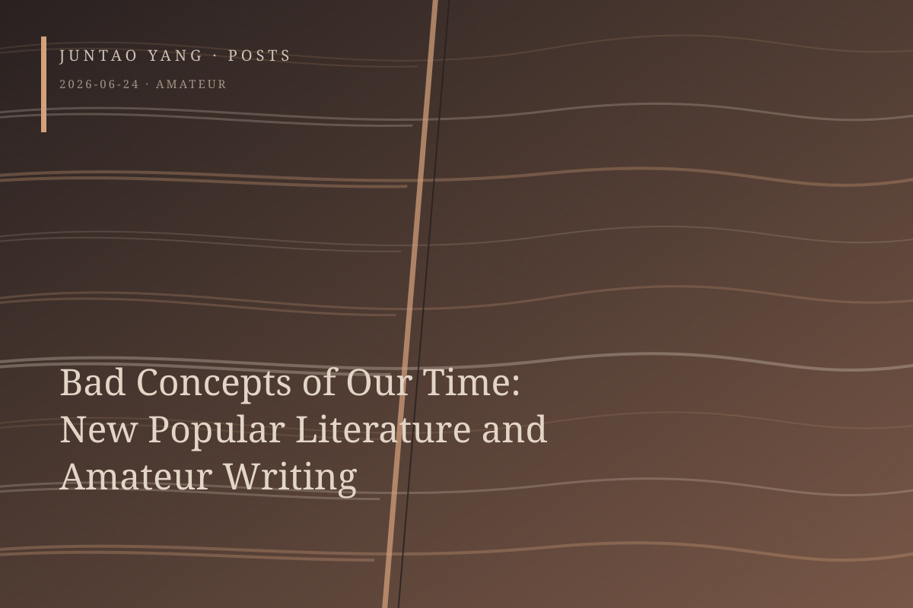

<content>
If “New Southern Writing” still carries an antagonistic intention—or at least a belief, whether guileless or cunning, that one center can be set against another—then “new popular literature and art” approaches the condition of a bad category. A category is bad when it cannot provoke paradoxical, ambiguous, or oblique thought; when it cannot disturb already rigid and overconsolidated discursive relations, even in the name of a revolutionary and purified utopian vision; and when it leaves untouched the forms of power sedimented beneath those relations.
Suppose, however, that we remain willing to believe that the apparent defect of “new popular literature and art”—its indiscriminate inclusiveness—might leave room for dormant forces and hidden currents, perhaps even allowing provocation and resistance to shed one skin and return in another. “Amateur writing,” by comparison, is stupid to the point of evil.
So you enjoy watching amateurs too? I find amateur work has a peculiar exhilaration and stimulus of its own. When I tire of highly performed extravagance, the amateur’s immaturity, even coyness, can satisfy my gluttonous appetite. This appetite is shared by those scholars of literature whose lips wag and saliva drips. The so-called amateur writer—whether or not the concept is legitimate, whether it names an act of consumption, whether it invites strategic disguise—becomes merely a new seasoning for their furtive and disreputable scholarly appetite, one that objectifies its subject and luxuriates in the resulting structure of enjoyment. It is also their little blue pill, prescribed for the double and repeatedly incurable impotence of political careerism and academic intimacy.
</content>
June 24, 2026
Bad Concepts of Our Time: New Popular Literature and Amateur Writing
If “new popular literature and art” is merely a bad category, “amateur writing” turns the writer into an object of scholarly appetite and managed authenticity.
